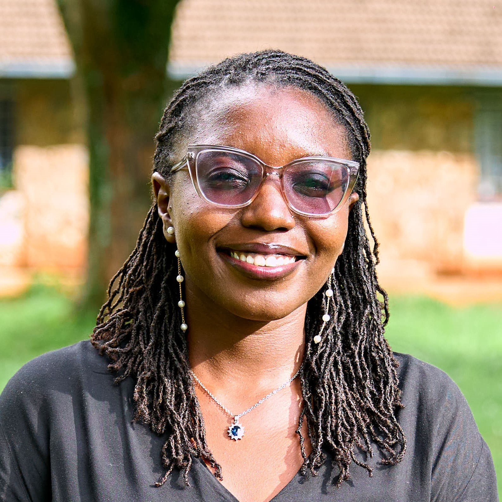

Evidence for better decisions.
MEA is a research and advisory consultancy helping organisations turn complex questions into useful evidence, clear insight and informed action.
Research should do more than sit in a report.
MEA works at the intersection of research, evidence and decision-making. We support organisations to investigate important questions, understand what the evidence is saying and use those insights to inform action.
Our work spans research design, evidence synthesis, data and analysis, monitoring, evaluation and learning, and research communication.
We bring together rigorous research thinking with a practical understanding of the environments in which evidence is used — with a particular focus on African contexts.

Research-led. Impact-focused.
Esther Murunga
Founder & Research Consultant
Esther is a public health specialist and researcher with experience across research, programme management and evidence-informed development.
Her work has included research and programme initiatives spanning health, livelihoods, youth development and community-focused interventions.
Through MEA, she brings together research experience, analytical thinking and a commitment to producing evidence that is relevant, accessible and useful.
Have a question worth investigating?
Let's explore what the evidence can tell you.
Start a Conversation